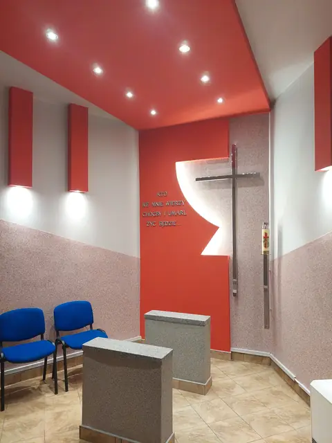
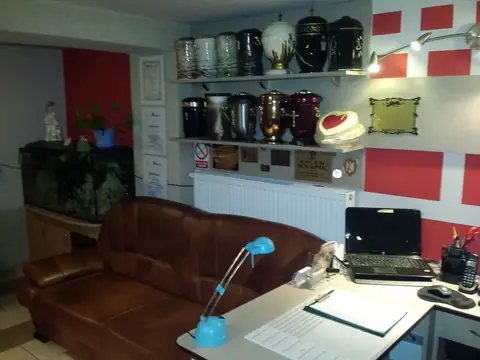
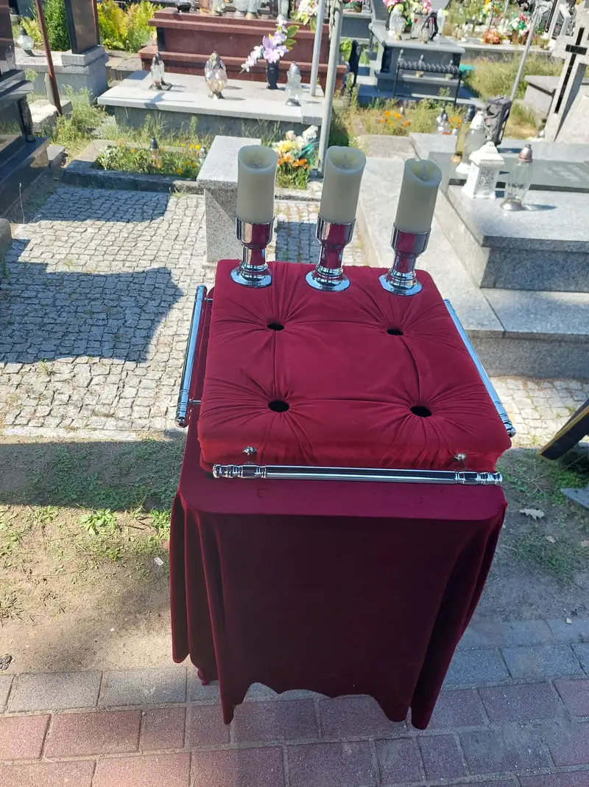
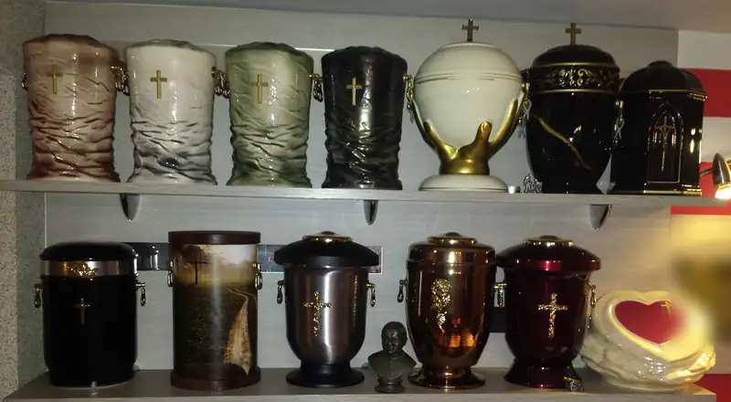
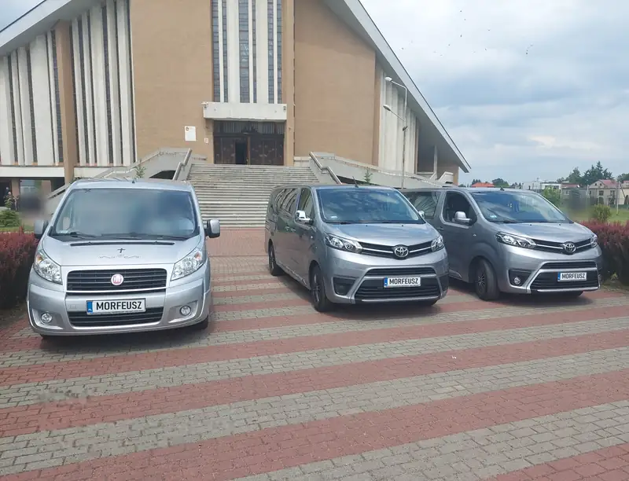
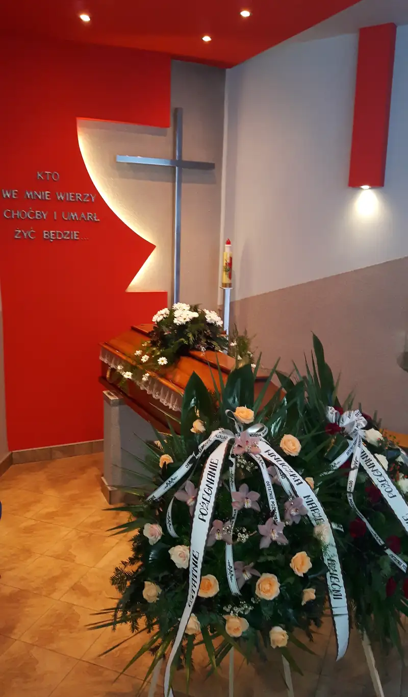
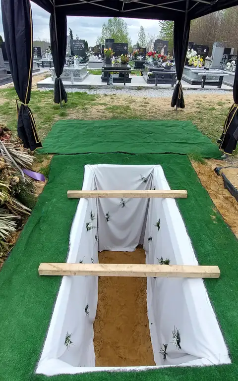

Usługi pogrzebowe
Świadczymy kompleksowe usługi pogrzebowe: od pierwszego telefonu, przez formalności, transport i przygotowanie zmarłego, po ceremonię, cmentarz i pomnik. Zakład jest czynny całą dobę, także w święta.
Telefon całodobowy: 601 460 964

Organizacja pogrzebu i formalności
Pogrzeb organizujemy kompleksowo, więc rodzina nie musi sama chodzić po urzędach ani ustalać szczegółów z kilkoma firmami. Wszystko omawiamy spokojnie, w biurze zakładu albo przez telefon.
- Kompleksowa organizacja pogrzebu
- Bezgotówkowa organizacja pogrzebu - rozliczenie z zasiłku pogrzebowego
- Pomoc w formalnościach w urzędzie, parafii i na cmentarzu
- Ceremonie wyznaniowe i świeckie

Kremacje
Organizujemy pogrzeby z kremacją: przewóz zmarłego do krematorium, wybór urny i pogrzeb urnowy na cmentarzu.
- Organizacja kremacji
- Sprzedaż urn
- Pogrzeb urnowy z oprawą na cmentarzu
- Nagrobki urnowe

Trumny, urny i ubrania
W zakładzie można wybrać trumnę lub urnę oraz ubranie dla zmarłego. Pomożemy dobrać je do rodzaju pogrzebu i życzeń rodziny.
- Sprzedaż trumien
- Sprzedaż urn
- Ubrania dla zmarłych

Ubieranie i kosmetyka zmarłych
Przygotowanie zmarłego do pożegnania wykonujemy z szacunkiem i według życzeń rodziny. Można przynieść własne ubranie zmarłego albo wybrać je w zakładzie.
- Ubieranie osób zmarłych
- Kosmetyka osób zmarłych
- Ubrania dla zmarłych
Transport zmarłych i własna chłodnia
Przewozimy zmarłych własnymi karawanami do naszej chłodni, a w dniu pogrzebu na ceremonię. Wykonujemy też transport zmarłych na terenie całego kraju i za granicę.
- Karawany
- Krajowy i międzynarodowy transport zwłok
- Własna chłodnia
- Autokary dla uczestników pogrzebu

Oprawa ceremonii
Na życzenie rodziny zapewniamy oprawę muzyczną, kwiaty i dekoracje. Pożegnanie może odbyć się w naszej kaplicy.
- Oprawa muzyczna: trąbka, skrzypce, orkiestra, organista
- Wieńce i wiązanki
- Dekoracje żałobne mieszkań

Usługi grabarskie
Wykonujemy usługi grabarskie na cmentarzu we Wrzosowej. Przygotowujemy grób do pochówku i obsługujemy ceremonię na cmentarzu. Przy grobie rozstawiamy namiot z zasłonami, a teren wokół wykładamy matą.
- Usługi grabarskie na cmentarzu we Wrzosowej
- Namiot z zasłonami przy grobie
- Obsługa pogrzebu tradycyjnego i urnowego

Kamieniarstwo i liternictwo
Po pogrzebie pomagamy w sprawach pomnika: wykonujemy pomniki, nagrobki i nagrobki urnowe, liternictwo i zdjęcia na pomnikach, a także poziomowanie i naprawę pomników.
- Pomniki
- Nagrobki
- Nagrobki urnowe
- Liternictwo i zdjęcia na pomnikach
- Poziomowanie i naprawa pomników
Zakład czynny całą dobę
Także w niedziele i święta. Jeśli nie wiesz, od czego zacząć, zadzwoń - wszystko wyjaśnimy.